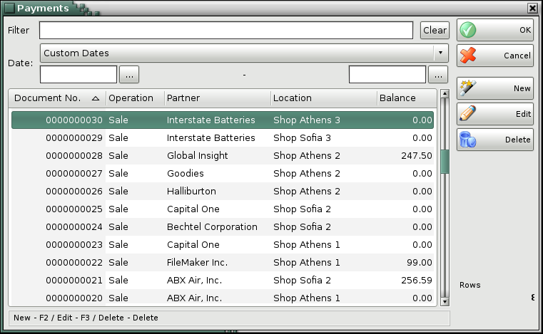
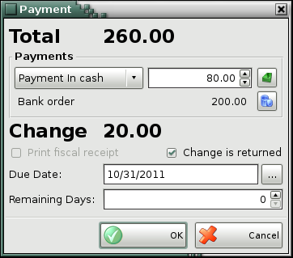
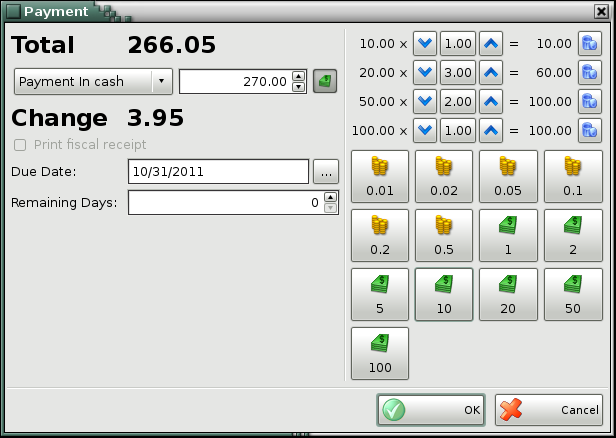
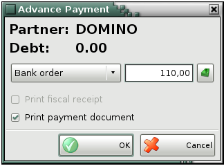

button.
button.Payments
Use the Payments window (keyboard shortcut Ctrl+F11) to view or perform payment operation based on an already issued document.
In the Date range field you may select the date range for which you wishto visualize payments � Custom Dates, Today, Yesterday, This week, Past week, Last week, This month, Past week, last week, This year, Past year or Last year. The Date filter is active only when you select Custom Dates and you may enter the desired start and end date.

To perform a payment operation or edit a payment, select the desired document and click on the Edit button.
You can register payment of the whole amount or part of it. The number of
partial payments related to a given document is unlimited. To delete
payment use button.

In the Payment window you can specify the payment's type: In cash, Bank order, Debit/Credit card or By voucher. You can specify an end date of payment. In the Remaining Days field is automatically filled the number of days remaining to the due date.
If the Print fiscal receipt option is enabled, the payment will be printed out.
If the received amount is greater than the payment amount and the option Change is returned is checked then the difference will be printed on the cash receipt as a change. In that case there will not remain an obligation to a partner. When the Change is returned is unchecked then the difference will stay as an obligation with negative sign.
Use  button to open additional buttons
with banknotes and coins, depending on the way of payment.
button to open additional buttons
with banknotes and coins, depending on the way of payment.

You can add an advanced payment from a partner using Payments window. Press New button and then choose a partner from Partners window. Press OK button and Advanced Payment window will be opened. There you can enter advance payment and the way of payment.

If you want to remove the entire payment in a document, you can do it directly from Payment window. Select the corresponding document and click on the Delete button.
�2006-2015 Microinvest, All rights reserved